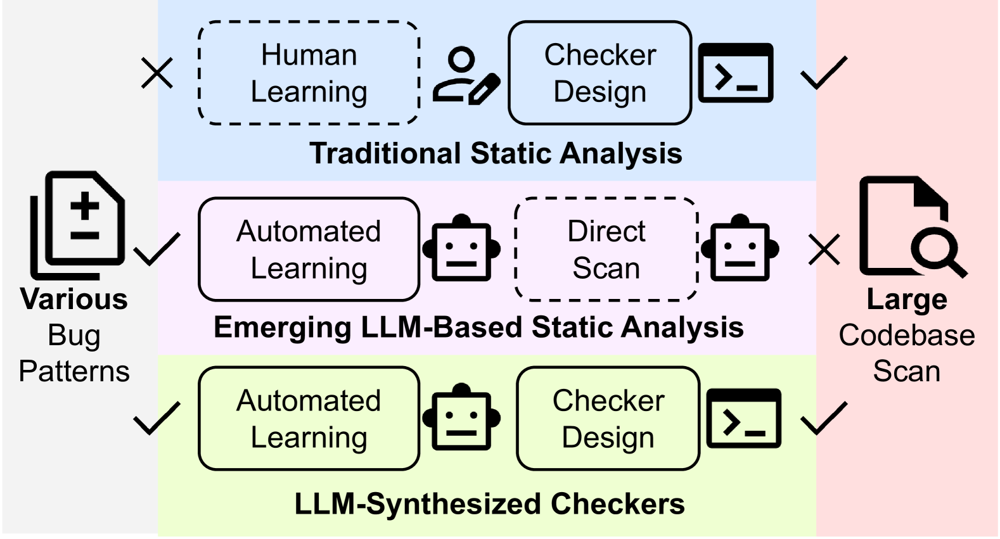
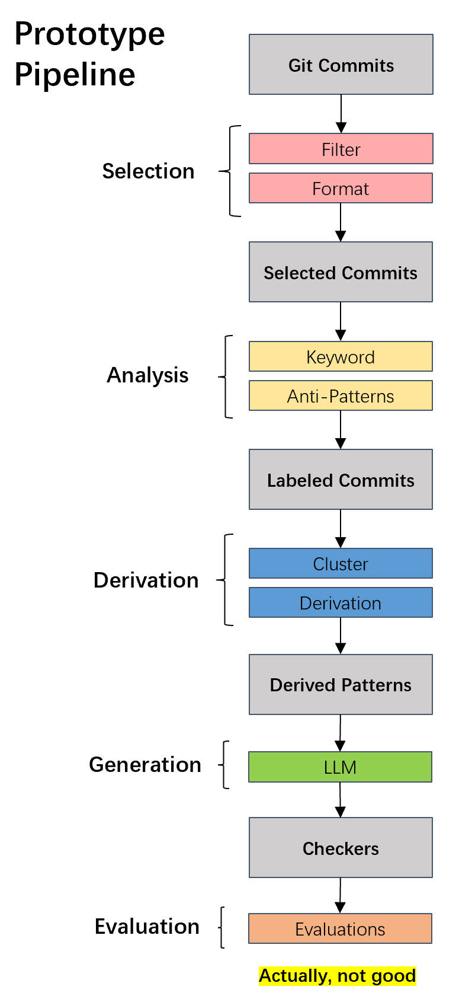
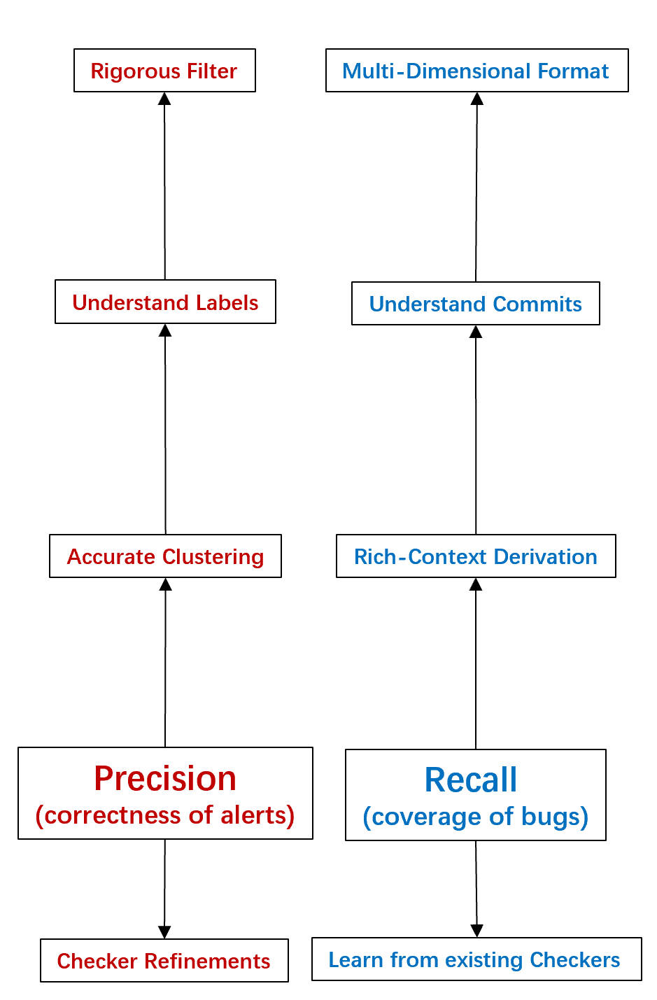
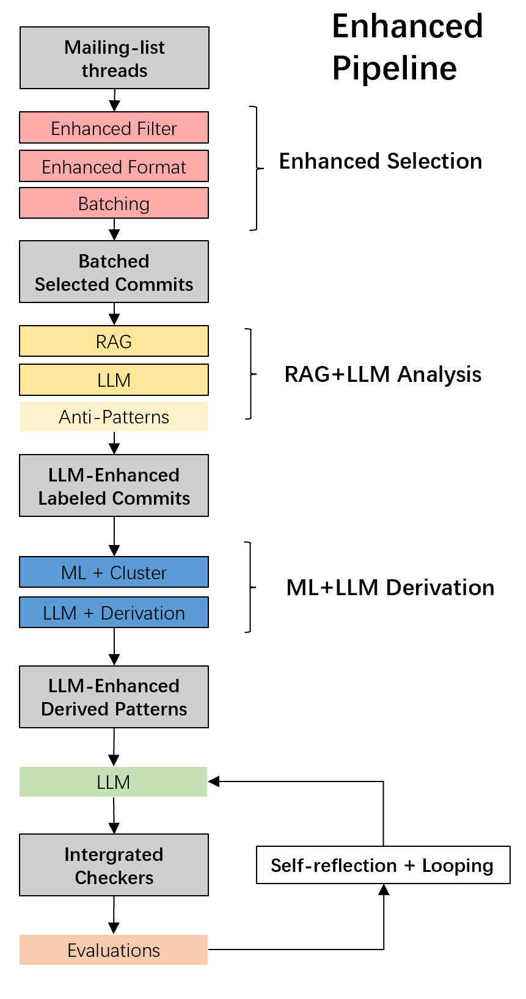
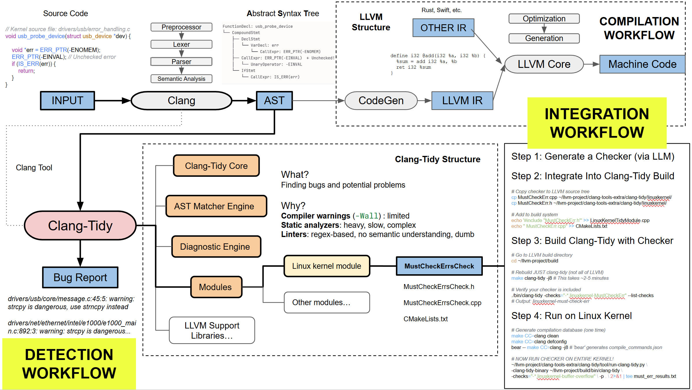

|
Turning Commit History into Security Checkers via LLMs |
|
The Linux kernel is a massive, living codebase. Every day, developers fix bugs, but often these bugs follow repetitive "anti-patterns"—missing locks, incorrect error handling, or uninitialized variables. LinuxGuard began with a simple question: Can we teach an AI to read a bug-fix commit and write a static analysis tool to prevent that bug forever?

Figure 1: The Vision. Utilizing LLMs to bridge the gap between unstructured
commit messages and structured AST Matchers.
Our initial attempt was straightforward (the "Naive Pipeline"). We fed the diff and commit message directly into an LLM (like GPT-4) and asked it to "write a Clang AST Matcher."

Figure 2: The Naive Pipeline. A simple single-pass prompt that often led to
compilation errors.
The Result? Failure. The generated C++ code rarely compiled. The LLM would hallucinate Clang APIs that didn't exist or write matchers that were syntactically correct but semantically meaningless. We realized that a single inference step was insufficient for the complexity of the Clang AST. Faced with these failures, we had to rethink our approach. We analyzed why the model was failing and realized there was a reasoning gap. A human developer doesn't just "output code"; they analyze the bug, formulate a logic, and then iteratively refine their code. We decided to restructure the pipeline to mimic this cognitive process. The diagram below illustrates our thought process: moving from "direct generation" to a layered approach that integrates reasoning (Chain-of-Thought) and feedback (Self-Correction).

Figure 3: Strategic Evolution. Our reasoning process for evolving the
pipeline from simple prompting to a robust, multi-agent system.
Guided by the strategy above, we implemented two key architectural improvements that transformed LinuxGuard into a working tool. 1. Chain-of-Thought Synthesis
We decoupled analysis from generation. We forced the model to "think" before it coded: first, explain why the code is buggy; second, describe the pattern in plain English; and only then, generate the C++ matcher code.

Figure 4: Chain-of-Thought. By explicitly separating reasoning from coding,
we significantly improved semantic accuracy.
2. The Self-Healing Loop
To handle syntax errors, we introduced a Repair Agent. When the Clang compiler throws an error, we capture the `stderr` output and feed it back to the LLM, creating a closed-loop system that iterates until the checker compiles successfully. 
Figure 5: Self-Healing. The system automatically fixes compilation errors
without human intervention.
Finally, the generated checkers were not just theoretical. We built a harness that injects these
dynamically generated matchers into the standard Linux kernel build process as full

Figure 6: Real-world Integration. Embedding our AI-generated tools into the
LLVM/Clang ecosystem.
At the heart of LinuxGuard lies the Orchestrator, a Python-based engine that
manages the entire lifecycle of a checker. The excerpt below highlights the core
pipeline_orchestrator.py (Core Logic Excerpt)
|
|
© 2025 Xuming Huang. |